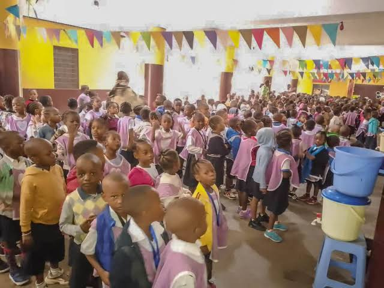
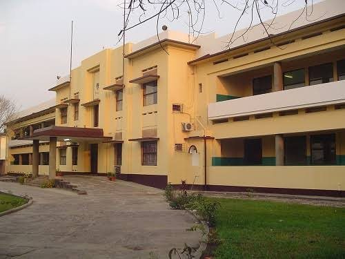
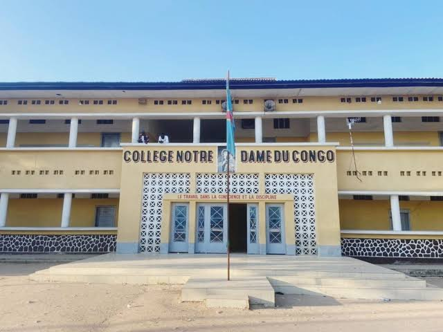

Lycée Bosangani
2009 - 2012
Maternelle : base éducative, socialisation et première structuration académique.

Mon évolution
Chaque étape a renforcé ma discipline, ma curiosité et ma vision professionnelle.
2009 - 2012
Maternelle : base éducative, socialisation et première structuration académique.

2012 - 2013
Transition vers le primaire dans un environnement exigeant et formateur.

2016 - 2018
Consolidation des fondamentaux et développement d'une rigueur personnelle.

2018 - 2024
Cycle secondaire marqué par l'autonomie, l'ambition et la préparation universitaire.
